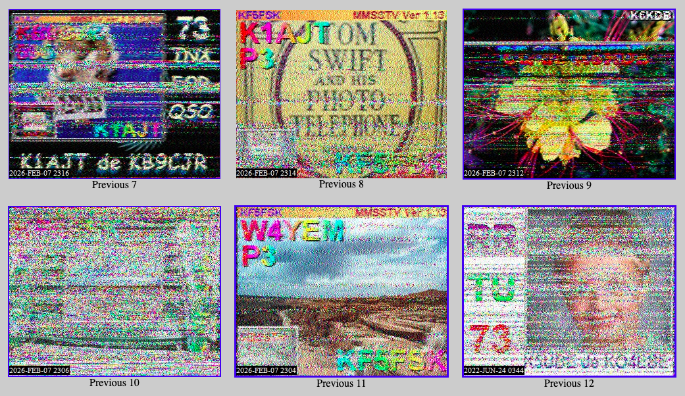

Prueba 7 de agosto, 2026
Una entrada de prueba
Este es un documento de prueba para verificar que el pipeline sigue funcionando después de la limpieza.
- Lista uno
- Lista dos
Un párrafo con negrita, cursiva y un enlace.
Subsección
Cita de prueba con
código en línea.
echo "hola"